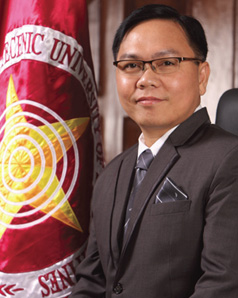

Transforming PUP into an epistemic community.
- 2012
Dr. Emanuel Castro De Guzman was appointed President of the Polytechnic University of the Philippines by the Commission on Higher Education in accordance with the provisions of Republic Act 8292 otherwise known as the Higher Education Modernization Act of 1997, and by virtue of Resolution No. 872, series of 2012 passed on March 14, 2012 by the PUP Board of Regents.

Dr. Emanuel C. De Guzman
Highlights of this year's accomplishments include:
- A new University vision and strategic objectives were formulated and sectoral groupings of offices, colleges and departments were made.
- A series of consultations/dialogues with various sectors of the University to explain the need and importance of the change process were conducted.
- Clustering of disciplines in the Colleges:
- College of Accountancy and Finance - formerly College of Accountancy; included the Department of Banking and Finance
- College of Architecture and Fine Arts - included a new Department of Urban Planning
- College of Arts and Letters - merged the College of Arts and College of Languages and Linguistics
- College of Business Administration - formerly College of Business
- College of Communication - included the Department of Advertising and Public Relations
- College of Computer and Information Sciences - formerly College of Computer Management and Information Technology; included a new Department of Information Science
- College of Engineering - included new Departments i.e. Chemical Engineering and Environmental Engineering
- College of Education - included the Department of Library Science
- College of Political Science and Public Administration - new college, with two departments formerly under the College of Economics, Finance and Politics
- College of Science - included two Departments formerly under the College of Nutrition and Food Science
- College of Social Science and Development - new college, merging the departments formerly under the College of Cooperatives and Social Development, CEFP and the College of Arts
- Institute of Technology - formerly College of Technology
- College of Tourism, Hospitality and Transportation Management
- College of Law
- College of Human Kinetics
- Graduate School
- Renan John S. Cañas ranked 1st in the ECE Board Examination; Erwin R. Consuegra ranked 2nd in the Architecture Licensure Examination Board of Architecture, Abu Dhabi, United Arab Emirates, Al-Khobar and Riyadh, Kingdom of Saudi Arabia, and Doha, Qatar; Paul John A. Lafrades ranked 3rd in the ET Licensure Examination; Jerome C. Jastiva ranked 6th in the CE Board Examination; Hymer Bryan P. Holgado ranked 6th in the ME Board Examination; Dean Domingo Gamay ranked 8th in the CPA Board Examination; and Benje A. Capistrano ranked 10th in the RME Licensure Examination
- PUP ranked 3rd in the PRC Top Performing Schools for the Nutritionist-Dietitian Licensure Examination;
- PhP 5.7M scholarship funds received from 66 donors
- Dual Tech Program tie up with Technical Education and Skills Development Authority (TESDA), Stage 1: Curriculum Review of Technical Courses
- Development and implementation of the PUP Mobile Portal, an Android/iOS app developed by students from then College of Technology
- Grand Innovation Fair showcasing inventions and innovations of PUP students
- Clustered Research Centers into Institutes:
- Institute of Cultural Studies (formerly Institute of Social History - RIPE) which includes the Center for Social History, Center for Creative Writing, and Center for Philosophy and Humanities
- Institute of Science and Technology Research (formerly Science and Technology Research and Development Center) which includes the Center for Engineering Research, Center for Life Sciences Research, and Center for Physical and Mathematical Sciences Research
- Institute for Data and Statistical Analysis (formerly Center for Data and Statistical Analysis)
- Institute for Social Sciences and Development which includes the Center for Human Rights and Gender Studies, Center for Peace and Poverty Alleviation Studies, Center for Environmental Studies, Center of Labor and Industrial Relations Studies, and Center of Public Administration and Governance Studies
- Strengthened Other Offices and Units in Research:
- Research and Extension Management Department (formerly Research Management Office) wich includes the Intellectual Property and Commercialization Office, Innovation and Technology Support Office, and Center for Entrepreneurial Development
- Institutional Planning Office
- Publications Office
- Research outputs: 71 published in refereed/non-refereed journals; 133 presented in international, national, and regional conferences; 200 copyrighted; 12 externally-funded research projects
- Revisited Research Policies: University Intellectual Property Policy (for public presentation), University Research and Development Manual (for public presentation), Increased financial assistance to faculty researchers. Copyright Guidelines (for implementation)
- Strong Research Collaboration with other universities and institutions (PASUC-NCR, UST, Pi Lambda Theta, PSUCCESS, National Youth Commission, ASAIHL), initiated proposal for establishment of Natural Gas Institute with initial capitalization of PhP100M, received CHED Grant of PhP100,000 for Annual Research Awards, and forged PUP-DOST NCR MOA for Energy Audit Consultancy Services
- Faculty Promotion and Change of Status Promotion (187 promoted pursuant to NBC 461 3rd Cycle, 198 plantilla items for faculty merit promotion), Change of status (139 from part time to temporary status, 42 from temporary status to permanent)
- Administrative Personnel Promotion (57 First level positions, 32 Second level positions)
- Massive Information and Communication Dissemination: PUP Website, The Observer, Media Exposure, PUP iText, Facebook and Twitter
- The President's Investiture
- Rehabilitation of classrooms (phase 1) in the main academic building; Repair and rehabilitation of track oval (phase 1), swimming pool, tennis court, fountain; Repair and rehabilitation of 2nd and 3rd floors Sampaguita Building (phase 1), Bonifacio Hall, conversion of non-functional rooms into a canteen; Repair and rehabilitation of PUP Lopez, Quezon gymnasium (phase 1); Construction of New Building in Cabiao Nueva Ecija campus, Unisan Quezon branch, Taguig branch, Maragondon Cavite branch; Improvement of facilities in San Pedro Laguna campus
- Operation Damayan: Relief and rehabilitation drive for victims of the floods that hit the National Capital Region and nearby provinces during the onslaught of torrential monsoon rains. 300 families from Barangay Guinayang, San Mateo, Rizal and 500 children from Sitio Olandes, Barangay Industrial Valley, Marikina City have benefitted.
- Training of Communication Officers
- PhP 7 Million National Government allotment for Industrial Laboratory through DPWH Disbursement Acceleration Program
- The PUP Good Governance Conditions and Transparency Seal was posted in the PUP Website
- Resource generation increased by 29.70%
- Established commitees on the evaluation of textbooks; guidelines on the conduct of educational tours and field visits; guidelines on fund raising and collection activities; and guidelines on income-generating projects.
- 2013
Developments during this year include:
- The PUP Logo and logotype were streamlined. A standard guideline for visual elements was developed to guide the PUP Community on the appropriate use of University logos and marks.
- Licensure Examination Topnotchers: (Nutritionist-Dietitian) John Carlo R. Morillo ranked 1st, Julius Ceazar A. Bactad ranked 3rd (Maru Azalea R. Tinio, a Laboratory High School alumni ranked 2nd); (Architecture and Fine Arts) Roger M. Sarmiento III ranked 4th; (Architecture, Middle East) Raymund G. Beltran ranked 3rd, Ramil DS. Servantes ranked 4th; (Mechanical Engineer) Marvin A. Bas ranked 6th, Renan S. Cauilan ranked 7th; (Registered Electrical Engineer) Mark Harry T. Reyes ranked 9th; (Master Electrician) Fedelino M. Suarez ranked 2nd, Jagill R. Gallo ranked 4th, Jess Engelbert Suacillo ranked 6th; (Electronic Technician) Joel Anthony R. Baylon, Emanuel S. Gabriel and John Paulo R. Root ranked 5th, Dhana P. Patagoc ranked 6th; (Certified Public Accountant) Janine P. Peñaverde ranked 8th; (Interior Designer) John Dexter O. Baring ranked 3rd; (Librarian) John Christopherson LT. Fredeluces ranked 7th; (Civil Engineer) Kenneth B. Enopeques ranked 5th; and (Electronics Technician) John Perloe M. Sotto ranked 2nd.
- PUP Taguig ranked 8th in the Licensure Examination for Teachers (Secondary Level)
- In the Quacquarelli Symonds (QS) World University Rankings by Subject 2013 Country File on the Philippines report, PUP ranked 3rd in Life Sciences and Medicine, 4th in Economics and Econometrics, 5th in Natural Science (Chemistry), and 5th in Communication and Media Studies
- PUP Open University Master of Science in Construction Management in Abu Dhabi, United Arab Emirates
- PUP Mighty Maroons won the Philippine Association of State Universities and Colleges Administrative and Faculty Games Championship
- SCUAA National Olympics Champion in Lawn Tennis, Softball, Chess and Badminton
- Gold medalist in the 18th UNIGAMES Men's Chess Team
- Organized the International Research Conference in Higher Education 2013, which was endorsed by the Commission on Higher Education and National Research Council. The event was participated by 30 foreign delegates (Australia, China, India, Japan, Malaysia, Korea, United States of America, etc.), 450 local delegates (SUC and private universities), and 240 presenters of papers published in the book of abstract.
- Development and implementation of the PUP Online Survey, a Web-based service that enables students to participate in University surveys such as the Online Faculty Evaluation, ICT feedback survey, and the socio-economic profile of freshmen students.
- Development and implementation of the PUP Human Resource Information System Module 1 (201 File), Module 2 (Attendance Monitoring), and the use of biometrics for attendance monitoring.
- Research collaboration with Ho Chi Minh City Open University, Vietnam
- Implemented the BOR-approved merit promotion of 133 faculty members
- Establishment of the PUP Maragondon Annex in Alfonso, Cavite
- Launching of the CLFI e-Learning Center, which is donated by the Cebuana Lhuillier Foundation
- Creation of a 13-member Monitoring and Investigation Committee for Textbook and other Materials Policy Implementation (MICTIMPI). Stricter implementation of PUP Policy on promoting High School and College textbooks.
- Development and implementation of the PUP Bookstore, wherein students order books online and claim at the exclusive sales outlet for approved textbooks and instructional materials in the University Bookstore.
- Consolidation of College Extension Projects by the Community Relations and Extension for Development Office (CREDO) and operationalizing relief operations for the victims of natural calamities.
- PUP launched on November 18 “Saro Kita: PUP Community's Day of Meal-Sharing with 'Yolanda' Victims”. PUP officials, faculty, employees and students shared their noontime meal budget for the day to the victims of the super typhoon "Yolanda" (international name Haiyan) in Leyte, Samar and other major islands in the Visayas.
- Engaged in Partnerships/MOA's with:
- Islamic University of Infonesia
- Thai Nguyen University
- Consortium for the Conservation and Sustainable Development of Laguna Lake
- Pilipinas Shell and DepEd for the Road Safety for Children
- Department of Health (DOH) for the Pilipinas Go 4 Health program
- Commission on Human Rights for the Human Rights Action Centers and the Rule of Law
- Movie and Television Review and Classification Board for the sharing of ICT expertise and development of the MTRCB App
- Cooperative Development Authority for the Ladderized Training Courses, and
- DOH, Philippine Network for Organ Sharing and Philippine Information Agency for the "I am a Lifeline" Advocacy
- Policies and guidelines issued:
- Guidelines on Accepting Donations
- Guidelines on Off Campus Student Activities
- University Policy on Dormitory/Hostel Operations
- Guidelines on Fund Raising Activities
- Creation of Gazette Committee
- Guidelines on the full implementation of biometrics
- Vertical articulation and structure of the College of Education
- Guidelines on the conduct of office/unit strategic/action plans and team building activities
- Guidelines on the Institute of Technology teaching staff members screening process
- Guidelines on the rendition of Saturday services by the administrative employees
- The Collective Negotiations Agreement (CNA for 2013-2016) provisions were discussed, agreed upon between the Union ng Kawani ng PUP (UNAKA-PUP) and the Management panels, and was approved by the Board of Regents.
PUP, Soaring High in the Year 2013 as Country's First Polytechnic University
The Polytechnic University of the Philippines (PUP) has started celebrating its 109th Founding Anniversary this year with the theme “The Country's First PolytechnicU: Soaring High at 109”.
As the University is soaring high in the name of service to the nation, its pursuit for academic excellence and perseverance for comprehensive development in all aspects as a great educational institution, we look back to an interesting year with pride as well as with critical eyes to what must be improved and developed in the months and years to come.
Agenda 1: Pursuing Academic Excellence through Disciplinal Integrity
The country's first polytechnic and largest state university topped the recent national board examination for nutritionist-dietitian.
John Carlo Race Morillo ranked 1st and Julius Ceazar Aquino Bactad ranked 3rd in the July 2013 Nutritionist-Dietitian Licensure Examination conducted by the Professional Regulation Commission.
Morillo emerged as the exam's top performer by obtaining an 87.30% rating in the said examination where Bactad registered an 86.15% rating. PUP Laboratory High School alumna and University of the Philippines graduate Maru Azalea Reyes Tinio earned the 2nd top spot with her 86.45 rating.
Meanwhile, Mark Harry Tacadena Reyes ranked 9th in the September 2013 Registered Electrical Engineer Licensure Examination while Jagill Ramos Gallo ranked 4th and Jess Engelbert Suacillo ranked 6th in the September 2013 Registered Master Electrician Licensure Examination conducted by the Professional Regulation Commission.
Reyes got an 88.40% rating in the board exam for electrical engineers in which his alma mater PUP-Lopez had a 46.88 passing percentage; PUP-Sta. Mesa, 57.80%; PUP-Maragondon, 28.00%; and PUP-Sto. Tomas, 63.16%.
Gallo obtained an 87.50% rating while fellow PUP-Sta. Mesa graduate Suacillo registered an 86.50% rating in the board exam for master electricians in which PUP-Lopez had a 100.00 passing percentage; PUP-Sta. Mesa, 80.00%; PUP-Maragondon, 42.86%; PUP-Sta. Rosa, 100%; and PUP-Sto. Tomas, 37.50%.
Graduates of the Polytechnic University of the Philippines also ranked high in the various licensure examinations conducted by the Professional Regulation Commission in the months of October and November.
Raymund Gadon Beltran placed 3rd and Ramil Delos Santos Cervantes placed 4th in the October 2013 Special Professional Licensure Examination for Architects held in the Middle East.
Beltran obtained a rating of 80.50% while Cervantes posted an 80.30% rating making them two of the top performers among the 227 new architects who passed the licensure examination. The figure represented 60.05% of the 378 examinees who took the examination conducted by the PRC. Beltran, Cervantes and 11 other examinees who hurdled the said board examination gave PUP-Sta. Mesa a 92.86% passing percentage.
Meanwhie, Kenneth Borja Enopeques, a PUP-Lopez graduate, posted a rating of 96.25% and placed 5th in the November 2013 Civil Engineer Licensure Examination in which 97 or 53.29% of the examinees from PUP-Sta. Mesa, PUP-Lopez and PUP-Sta. Maria passed. The national passing percentage was pegged at 48.11%.
John Dexter Obaña Baring of PUP-Sta. Mesa registered an 86.10% rating and landed 5th in the October 2013 Interior Designer Licensure Examination in which 4 or 80.00% of the examinees from PUP-Sta. Mesa passed. The national passing percentage was pegged at 69.17%.
John Christopherson La Torre Fredeluces emerged as 7th placer in the November 2013 Librarian Licensure Examination with his 86.30% rating. A total of 32 or 50.79% of the examinees from PUP-Sta. Mesa passed the examination which had a 45.80% national passing percentage.
Janine Pranada Peñaverde of PUP-Sta. Mesa posted a 91.43% rating and placed 8th in the October 2013 Certified Public Accountant Licensure Examination which had a 40.84% national passing percentage. PUP-Sta. Mesa, PUP-Mariveles, PUP-Lopez, PUP-Maragondon, PUP-Ragay, PUP-Sta. Maria, PUP-Sta. Rosa, PUP-San Juan, PUP-Sto. Tomas and PUP-Taguig yielded 473 passers who comprised 44.79% of the PUPians who took the said examination.
PUP-Taguig emerged as the 8th top performing school in the September 2013 Licensure Examination for Teachers (Secondary Level) with its 82.26 % passing percentage. The said examination produced for PUP-Sta. Mesa, PUP-Bansud, PUP-Mariveles, PUP-Calauan, PUP-Commonwealth, PUP-Lopez, PUP-Maragondon, PUP-Mulanay, PUP-Ragay, PUP-San Pedro, PUP-Sta. Maria, PUP-Sta. Rosa, PUP-Sto. Tomas, PUP-Taguig and PUP-Unisan a total of 620 new secondary school teachers equivalent to a 39.59% passing percentage for the entire PUP System.
The September 2013 Licensure Examination for Teachers (Elementary Level) yielded a total of 90 new elementary school teachers from PUP-Quezon, PUP-Mariveles, PUP-Cabiao, PUP-Lopez and PUP-Mulanay or a 67.66 % passing percentage for the PUP System.
On the other hand, another alumnus of the College of Architecture and Fine Arts brought honors to the Polytechnic University of the Philippines when he emerged as one of the top performers in the June 2013 Licensure Examination for Architects.
Roger M. Sarmiento III placed 4th in the recent architecture board examination which produced a total of 40 new licensed architects from PUP. He obtained a rating of 84.90% in the said examination conducted by the Professional Regulation Commission.
PUP posted a 65.57% passing percentage, a rate several points higher than the 50.99% national passing percentage. Forty of the sixty-one examinees from PUP took the board exam when added to the total number of passers produced 901 new licensed architects for the entire Philippines.
Meanwhile, students from PUP-Sto. Tomas, Batangas branch bagged the 1st place in the Regional Math Wizards and Regional Quiz Show held during the 9th Regional Student Conference of the Institute of Integrated Electrical Engineers of the Philippines Inc. Council of Student Chapters in Southern Tagalog. The event was held at University of Perpetual Help Dalta System, Calamba, Laguna on September 6, 2013. It carried the theme “Leading the Electrical Practitioners Towards Global Recognition”.
Sorren Dave Garcia, Joven Kakatian and Raymart Retanan won in the Regional Math Wizards Category while Gilbert Ricalde, Gherick Impoy and Nikko Umandap topped the Regional Quiz Show. Engr. Billy Ray Oldan, MSEE, BSEE Program Coordinator trained and coached the students.
The regional champions from PUP-Sto. Tomas, Batangas are set to compete in the 38th IIEE Annual National Convention slated on November 29 at the SM Mall of Asia-SMX, Pasay City.
In other developments, 11 faculty members from the PUP Institute of Technology became National Certification II (NC II) holders for Computer Hardware Servicing after passing the written, oral and practical examinations conducted by the Technical Education and Skills Development Authority (TESDA) last August 22 and 29.
Prof. Melania Melanie M. Crasco, Prof. Maria Aida B. Huceňa, Prof. Diana M. Macapagal, Prof. Cynthia E. Pascual, Prof. Anthony G. Andres, Prof. Maria Kristela V. Fajardo, Prof. Danny A. Manalad, Prof. Paul Anthony T. Moron, Prof. Frescian C. Ruiz, Prof. Raquel G. Salazar and Prof. Maylene C. Salvador passed the three-part exams held at the Asian College of Science and Technology in Quezon City, a TESDA-accredited testing center.
NC II is a major requirement for faculty members teaching Technical Vocational Education and Training (TVET) courses in the revised curriculum for ITech academic programs.
Meanwhile, PUP Laboratory High School and PUP College of Communication alumnus Emmanuel Raon Santos was recently designated as dean of ABE International Business College in Cubao, Quezon City.
Santos became dean after demonstrating excellence in teaching communication skills and management subjects at ABEIBC.
Prior to his stint at ABEIBC, Santos also taught communication subjects in National College of Business and Arts (NCBA), AMA Computer Learning Center (ACLC) and Asia Pacific Academic Support Services, Inc.
Santos is finishing his Doctor in Educational Management degree at the PUP Graduate School. He obtained his Master in Business Administration degree from the International Academy of Management and Economics in 2009.
Meanwhile, PUP Laboratory High School students bagged seven major awards in the 25th Young Men's Christian Association National Assembly of High School Students held last November 3-6, 2013 at Senior Mess, Teacher's Camp, Baguio City under the theme "YMCA: Celebrating Strength, Service and Commitment".
The PUPLHS delegation brought home the following honors: Outstanding Delegation; Champion, General Information Quiz Bee (Gerardo Martin Quindoza); Champion, Word Factory (John Raphael Missiona); 3rd Place, Extemporaneous Speaking Contest (Ernalin Costiniano); 3rd Place, Spelling Bee (Enrique Navera); 3rd Place, Essay in Filipino, (Jhan Denis Santos); and Outstanding Delegates (Earl Francis Coral, Enrique Navera, and Patrick Arazo).
On the other hand, PUP Mighty Maroons bagged 1st Runner-Up in the 2013 Sinclair Paints' U-22 Basketball Super League last July.
In addition, a composite Mighty Maroons team composed of teaching and non-teaching personnel won for the Polytechnic University of the Philippines the championship plum in this year's edition of the Philippine Association of State Universities and Colleges Administrative and Faculty (PASUC ADFA) Games. The games were held in July.
Meanwhile, the PUP wood pushers showed an impressive performance and saved PUP's campaign in the 18th University Games held on October 20-28, 2013 at the University of St. La Salle in Bacolod City.
This was the second year that PUP has joined UniGames after the application submitted by Sports Development Office director Prof. Reynato G. Unso was approved last year.
With his unblemished record in board match, Jan Roldan A. Oriendo from the College of Architecture and Fine Arts became the best board finisher of the tournament when he collected five points in the competition after beating his opponents from Holy Angel University, Lyceum of the Philippines University, College of St. Benilde, Jose Maria College and De La Salle University-Manila.
The PUP chess team, composed of Gerwin T. Oronce (Library and Information Science), Joshua Hesed Crismo (History), Jeremias Ygot and Edwin Saforas (Physical Education) and coached by Ricardo B. Alvarado, finished the competition obtaining nine match points and posted a third place finish behind De La Salle University (champion) and second placer College of St. Benilde.
The University, on the other hand, generally displayed outstanding performance on the different sporting events in the 26th Season of the State Colleges and Universities Athletic Association (SCUAA) held last December 2- 6.
University athletes particularly in the swimming-women, karate-do women, badminton-men and badminton-women collected gold medals and were declared champions in these events.
Agenda 2: Embedding a Culture of Research
Notable achievements on President de Guzman's Agenda 2 which aims to embed a culture of research in PUP are the following:
PUP convened the International Research Conference in Higher Education 2013 (IRCHE 2013) last October 3-4 at the historic Manila Hotel to celebrate its nearly eleven decades of existence as a leading academic institution.
IRCHE 2013 was a gathering of educators, scholars and researchers from various public and private institutions and organizations from all over the world. Endorsed by the Commission on Higher Education (CHED) and the National Research Council of the Philippines (NRCP), the event went with the theme “Responding to Global Challenges through Multi-Disciplinary Research”.
IRCHE 2013 is an offshoot of the successful National Research Conferences organized by PUP in 2004 and 2006. This international assemblage of research enthusiasts forms part of PUP's grand vision to transform itself into an epistemic community, an institution that generates, propagates and disseminates knowledge through research. It is primarily aimed at promoting and strengthening research in public and private colleges and universities.
The University also highlighted the best practices in offering and fostering a conducive environment and culture for research; build and maintain research expertise in higher education institutions for national development; explore various modalities of research partnership/linkages between producers and consumers of research skills and knowledge; and value the significance of strategies and actions for networking among researchers in promoting and sustaining higher education research as well as output utilization through IRCHE 2013.
Meanwhile, taking small steps to realize the University's goal of becoming a research university, officials from the different colleges and offices of the PUP presented their papers in international conferences and conducted university and college visits in Asia, United States, and Europe from the month of May to June.
On the other hand, six faculty members from the Polytechnic University of the Philippines presented five papers during the 12th Hawaii International Conference on Social Science, last May 29 - June 1, 2013, at the Waikiki Beach Marriott Resort and Spa, Honolulu Hawaii.
More so, two researches undertaken by faculty members of the Polytechnic University of the Philippines were read and delivered at the George Gerbner Conference on Communication, Conflict and Aggression at the Budapest College of Communication and Business, Budapest, Hungary, June 14-15, 2013.
In addition, the Asian Media Information and Communication Center (AMIC) 22nd International Conference held at Melia Purosani Hotel in Yogyakarta, Indonesia accepted four researches from PUP. More than 250 participants/ paper presentation from 24 countries were gathered during the four-day conference from July 4-7.
Officials representing the Office of the Vice President for Research, Extension, Planning and Development presented papers in the 2013 Pinoy Youth Barometer Conference. The Conference was held last July 19, 2013 at the Bayleaf Hotel, Intramuros, Manila. Jointly sponsored by the Asian Institute of Management Policy Center and the United Nations Children's Fund in cooperation with the Philippine Economic Society, the conference tackled papers on education, employment, and migration of the Filipino youth.
On the other hand, creative food entries from the Polytechnic University of the Philippines were featured in the Research Innovation Competition and Exhibit (RICE) 2013 held at the Technological Institute of the Philippines, Aurora Boulevard, Quezon City from July 31 to August 2.
Innovative food entries prepared by senior students from the Department of Nutrition and Dietetics (DND) of the College of Science qualified for the National Capital Region's Student Creative Research Category of the Regional Invention Contest.
RICE aims to recognize and further develop the inventions of students from public and private schools through the help of the Technology Application and Promotion Institute and the Department of Science and Technology.
Meanwhile, faculty researchers of the University presented papers in the 9th International Conference on Humanities and Social Sciences held in KhonKaen University Thailand on November 14-15. The conference was attended by researchers from 15 countries and covered topics on disciplines such as philosophy and religion; language and literature; culture; sociology and development; public administration; environment and development; media, information and communication; area studies; and education in humanities and social sciences in the two-day conference.
In addition, Reynold V. Luna and his co-researchers won two out of the five Surya Raghu and the Samahang Pisika ng Visayas at Mindanao (SPVM) awards during the 2013 International Conference on Applied Physics and Materials Science (ICAMS), the 2013 International Scientific Meeting on Complex Systems and the 15th SPVM National Physics Conference held at the Ateneo de Davao University, Davao City, Philippines last October 24-26, 2013.
The researchers' papers garnered the Best Entrepreneurial Paper and the Best Scientific Poster recognitions. The activity had 400 member-participants from different regions in the Philippines and delegates from Japan, Taiwan, Malaysia, Pakistan, the United States of America, and the United Kingdom of Great Britain.
On the other hand, PUP College of Communication Dean Dr. Edna T. Bernabe represented the Philippines in the Asia Media Forum 2013 held last October 28- November 1 in Songdo Convensia Incheon, Korea. The forum focused on media's role in creating an informed and responsive audience in 21st century Asia.
PUP was invited to the said forum because of COC's inclusion in Quacquarelli and Symonds top five outstanding Communication schools in the Philippines for the year.
Meanwhile, a dance delegation of PUP visited the University of Indonesia (UI) for a series of workshops on folk and contemporary dances at Gedung IX FIB UI in Jakarta, Indonesia last November 21-26. Fifteen students composed of dancers from the Movers and Motion , Teatro Komunikado, College of Education Dance Troupe together with the Creative Media Artists Society as staff and documentation team collaborated with the famous Krida Budaya of UI for a dance spectacle dubbed as “Unbreakable” . Supported by the Nusantara Arts Forum (NAF) of Indonesia and the Lakandayang Cultural Association, Inc. of the Philippines, the PUP dancers had the opportunity to sit during the round table discussion with Drs. A. G. Sudibyo, M. Si, deputy director of the Directorate for Student Affairs of UI and Frank 'Toby' Rorimpandey, the artistic director of NAF and talked about the present state of the arts particularly the performing arts and literature in both countries as well as future collaborations especially of the two universities. With the representatives from PUP sharing their thoughts about art and tradition preservation issues, the discussion was successfully carried out at the Regent's building in UI.
Agenda 3: Assuring Transparency and Participatoriness in Giving Rewards and Sanctions
The Polytechnic University of the Philippines' Board of Regents (BOR) has finally approved the 133 out of 186 applicants who applied for faculty merit promotion last July 1. The faculty positions ranged from Instructor II to Professor V.
Thirty-three (33) out of 42 faculty applicants moved up from Instructor 1 to Instructor II. Twenty-two (22) out of 25 faculty applicants moved up from Instructor II to Instructor III.
The following faculty positions were also filled based on the slots available in the plantilla: Assistant Professor 1 with 13 slots; Assistant Professor II with seven slots; Assistant Professor III with nine slots; Assistant Professor IV with 16 slots; Associate Professor I with 11 slots; Associate Professor II with three slots; Associate Professor III with four slots; Associate Professor IV with four slots; Associate Professor V with two slots; Professor I with one slot; Professor II with one slot; Professor III with three slots 3; Professor IV with one; and Professor V with one slot.
Meanwhile, around 400 faculty members of the Polytechnic University of the Philippines gathered for a two-day faculty development seminar-workshop at the Bulwagang Balagtas, Ninoy Aquino Library and Learning Resource Center in Sta. Mesa Campus last September 5-6.
Billed as “Be the B.E.S.T. (Beaming Example of a Synergistic Team)! Building a Holistic Learning University,” the activity was organized to establish shared understanding among the participants on the roles and competencies expected of educators in a constantly-changing environment. It was also aimed at infusing a united sense of purpose and spirit of commitment anchored on the ideals of the University.
The two-day activity brought together teachers from the 22 branches and campuses of the University.
Agenda 4: Modernization and Upgrading of Physical Facilities, Equipment, Library and other Campus Development
The signing of the Memorandum of Agreement for the establishment of PUP Maragondon Annex in Alfonso, Cavite was forged between the Provincial and Local Government of Cavite and the Polytechnic University of the Philippines on May 17 at Belleview Hotel in Alabang, Muntinlupa.
Present during the ceremonial signing were Gov. Juanito Victor C. Remulla from the Provincial Government of Cavite; Mayor Virgilio Varias and the councilors from the Local Government of Alfonso;Dr. Emanuel C. de Guzman, PUP President; Dr. Victoria C. Naval, Executive Vice-President; Ms. Marissa Legaspi; Vice-President for Finance; Dr. Joseph Mercado, Vice-President for Branches and Campuses; Prof. Denise A. Abril, Director of PUP-Maragondon Branch; and the heads of offices from PUP-Maragondon Branch.
Meanwhile, officials of the Polytechnic University of the Philippines (PUP) and top-ranking officers of the Cebuana Lhuillier Foundation, Inc.(CLFI) launched the PUP-CLFI E-Learning Center last August 16.
Led by PUP President Dr. Emanuel C. Guzman and San Marino Republic Consul General and Lhuillier Group of Companies President and Chief Executive Officer Dr. Jean Henri D. Lhuillier, the launching of the center was heralded as a major step for modern-type education in the University.
President De Guzman said that the major importance of E-Learning is that it broadens the horizons of many students as it exposes students to the world outside their own localities or places.
On the other hand, PUP-Maragondon, Cavite branch recently received 180 classroom monobloc chairs from the local government of the Municipality of Maragondon. Municipal Mayor Reynaldo Rillo personally presented to PUP-Maragondon Director Prof. Denise A. Abril and Central Student Council President Reggae Vecindario the chair donations in a ceremony witnessed by students, faculty and employees. Mayor Rillo pledged his continuous support to the lone PUP branch in Cavite.
Agenda 5: Reconceptualization of Academic Freedom
PUP President Dr. Emanuel C. De Guzman has formed a thirteen-member Monitoring and Investigation Committee for Textbook and other Instructional Materials Policy Implementation (MICTIMPI), a body tasked to assist the University Textbook and other Instructional Materials Evaluation Committee (UTIMEC).
President De Guzman has authorized MICTIMPI to ensure the strict implementation of the PUP policy on the promotion or distribution of High School and College textbooks and other instructional materials in the various academic units of PUP.
PUP faculty members are prohibited from “prescribing and/or selling directly or indirectly to students or be financially interested in the dissemination or disposal of any and all textbooks and instructional materials to the students which are not submitted for evaluation and approved by the UTIMEC and the Office of the President,” the President said.
The President reiterated that “the exclusive sales outlet for the approved textbooks and other instructional materials shall be the recently established University Bookstore.” The newly opened University Bookstore is located at the second floor of the Alex Marteja Hall which also houses the University Canteen.
Agenda 6: Institutionalizing Civil Society Engagement and Involved Extension Service Program
The Communication Management Office has conducted last July 29, 2013 the second installment of the annual training for the communication officers of the Polytechnic University of the Philippines.
Around 40 communication officers from the university's network of 22 campuses and 15 colleges attended the training at the PUP Information and Communications Technology Center in Sta. Mesa, Manila which focused on covering, writing and reporting for PUP CreaTV, the first university-based online channel in the country.
Organized by the CMO, the activity featured PUP alumni and broadcast media practitioners Steve Dailisan (GMA 7), Gerard Garcia (TV5) and JV Arcena (TV5) as speakers.
Meanwhile, the Community Relations and Extension for Development Office (CREDO) and iPOD V (I Am a PUP Operation Damayan Volunteer) conducted community relief operations last September 17 for the victims of tropical storm Maring in Barangays Malaban and Dela Paz, Biñan, Laguna.
The relief operations provided 75 relief packs to affected PUP-Biñan students, faculty and employees and 450 relief packs to the families from Barangays Malaban and Dela Paz. Clothes and medical supplies were also turned over to the community health centers of the two barangays. Around 100 children from three Day Care Centers in Brgy. Malaban received toothbrush and biscuit packs.
The goods and supplies distributed to the beneficiaries were donated by the students, faculty, employees, officials and alumni of our University.
After the Eastern Visayas provinces and other parts of the country were battered by super-typhoon Yolanda last November 8, members of the PUP community staged relief operations and various activities to solicit help for the victims. The University has responded to the challenges of the times.
PUP President Dr. Emanuel C. De Guzman has issued a letter of appeal to the community stating that “One people who die in our midst, is far too many. One of our countrymen, crying for help, is far too many for comfort and assistance.”
As per instruction of President De Guzman, the Community Relations and Extension for Development Office (CREDO) was delegated as the main coordinating office within the University to undertake relief operations and other related activities.The CREDO in response spearheaded PUP Operation Damayan which coordinated relief operations with the University campuses, colleges, offices and organizations.
As of November 20, the University has collected 7,646 bottled water; 7,881 packs of noodles; 2,800 pieces of toiletries; 4,680 pieces of canned goods biscuits, coffee, juices, candles and matchboxes and others.
CREDO's Barya-Barya Mula sa mga Iskolar ng Bayan campaign has also raised P164,949.70 as of November 19.
On the other hand, as of November 20, the University has collected P549,000.00 from employees and faculty members who shared their one-night service pay or donations equivalent to a three-hour teaching load.
To facilitate the immediate distribution of relief and other donations, the CREDO with other university employees and volunteers, proceeded last November 22 to Guiuan in Eastern Samar, one of the severely-hit places by super-typhoon Yolanda.
A total of 500 relief packs (each containing 10 kilos of rice, 15 packs of noodles, nine pieces of canned goods), 500 containers of 2.4 liters of water and 500 bags of new and used clothes for men, women and kids were prepared for distribution.
In addition, three sacks of toiletries, 26 boxes of biscuit, 10 sacks of blankets and pillows, three sacks of shoes, sandals and slippers, three boxes of medicines and first-aid materials, five boxes of sanitary napkins and three boxes of diapers were also included for the relief operation.
Furthermore, the University also launched on November 18 “Saro Kita: PUP Community's Day of Meal-Sharing with 'Yolanda' Victims”. A total of Php99, 291.95 was raised by officials, faculty, employees and students who opted to donate their noontime meal budget for the day to the victims of the powerful typhoon which struck the people of Leyte, Samar and other major islands in the Visayas last November 8.
“Saro Kita” formed part of the country's first polytechnic and largest state university's relief and rehabilitation program dubbed PUP Operation Damayan. It was aired live by GMA 7 and covered by TV5 and the print media. The Visayan phrase used to describe the event means meal-sharing in the Samarnon-Leytenhon language of the Eastern Visayas region which is comprised of six provinces, seven cities, 136 municipalities and 4,390 barangays with over four million populace.
On the other hand, the University has recetly entered into a Memorandum of Agreement with Pilipinas Shell Foundation, Inc. (PSFI) and the Division of City Schools, Department of Education-Manila (DCS DEPED-Manila).
The Polytechnic University of the Philippines has recently entered into a memorandum of understanding with the Philippine Information Agency (PIA) and the Department of Health (DOH).
PUP President Dr. Emanuel C. De Guzman and PIA Chief Executive Officer Sec. Herminio B. Coloma Jr. signed last November 5 an MOU for the joint implementation of the LifeLine organ donor campaign under the auspices of the DOH-led Philippine Network for Organ Sharing (PhilNOS), a government body tasked to promote the ethical practice of deceased organ donation and transplantation.
PUP, DOH and PIA are set to launch a mammoth one-hour and eight-hour donor sign up and world record attempt next year in a bid to obtain a Guinness World Record on Most People to Sign Up as Organ Donors in line with Lifeline's goal of increasing awareness and generating public support to the Philippine Organ Donation and Transplantation Program.
PUP President Dr. Emanuel C. De Guzman, PSFI Executive Director Edgardo R. Veron Cruz and DCS DEPED-Manila Superintendent Dr. Ponciano Menguito signed last August 28 a MOA for the joint implementation of the Road Safety for Children Program.
The Road Safety for Children Program (RSCP) is described as “a series of road safety activities, designed for school children to increase their awareness and develop their values on road safety with emphasis on traffic rules, safety conduct and road courtesy, and program in support of the United Nations Decade of Action for Road Safety 2011-2020.”
Meanwhile, Department of Health (DOH) Assistant Secretary Enrique “Eric” Tayag launched the DOH Pilipinas Go 4 Health Program in the main campus of the University on July 23. A nationwide program and movement on healthy lifestyle, Asec Tayag explained that Pilipinas Go 4 Health aims to inform and engage young and adult Filipinos in forming healthy habits and practicing a healthy lifestyle through the promotion of physical activity, proper nutrition, and the prevention and cessation of smoking and alcohol consumption.
On the other hand, The Polytechnic University of the Philippines has entered into a Memorandum of Understanding with the Movies and Televisions Review and Classification Board (MTRCB).
PUP President Dr. Emanuel C. De Guzman and MTRCB Chairman Atty. Eugenio H. Villareal signed last July 31, 2013 an MOU which provides that PUP will assist MTRCB “in the development and hosting of the latter's website.”
PUP is also expected to aid MTRCB in its “online permit registration system” and “in the evaluation of the existing IT infrastructure of MTRCB.”
The MOU requires PUP to develop “a web-based registration system for MTRCB which will produce ePermit once reviewed and processed by MTRCB personnel, and an MTRCB-PUP mobile application.” The mobile application will “allow MTRCB deputies to report the compliance of cinemas/television shows with the classifications/permits issued by MTRCB.” It will also enable the public to “send feedback on television/movie shows.”
The review and classification board will, in return, “provide PUP the necessary information for developing the web-based registration system of MTRCB and the MTRCB-PUP mobile application.”
Agenda 7: Fiscal Responsibility
To continue what he has started in his first year in office, President De Guzman led the University in ensuring fiscal responsibility.
The Administration has reviewed and improved the University resource generation policies which produced positive results.
From January to September this year, the University has generated P247,829,244.61 from income generating projects as compared to P230,098,600.92 of the same period. This produced a 8% increase on the total University income amounting to P17,730,643.69.
Assessment of the Institutional Processes and Critical-Rational Review of the organization
After months of negotiation, the Administration and Unyon ng Nagkakaisang Kawani ng PUP (UNAKA-PUP) finally concluded the Collective Negotiation Agreement (CAN) between the two parties last December 17. The new CNA will take effect for four years from 2013 to 2016.
Meanwhile, in its continuing effort to manage a big organization like the PUP, the Administration released a series of memorandum for the members of the academic community to comply with.
- Guidelines in the Evaluation of Textbooks and Other Instructional Materials (Memo Order No. 018, s. 2013; April 30, 2013)
- Guidelines on the Conduct of Off-Campus Activities
- Dormitory Policies of Hasmin Hostel for Faculty Members and Administrative Employees (Memo Order. No.035, s. 2013; June 15, 2013)
- Guidelines on Assigning Teaching Load to Faculty Designees (Office Memo No. 3, s. 2013)
- Guidelines on the Part time Teaching Load of Administrative Employees (Memo Order. No 022, s. 2013; May 30, 2013)
- Guidelines on the Full Implementation of Biometrics (Memo Order No. 021, S 2013, May 22, 2013)
- Vertical Articulation and Structure of the College of Education (Memo Order No. 019, s. 2013, May 8, 2013)
- Guidelines on the Conduct of Office/Unit Strategic Action Plan and Team-building Activities (Memo Order No. 016, S. 2013, Apr 15, 2013)
- Guidelines on the Institute of Technology Teaching Staff Members Screening Process (Office Memo No. 8, s. 2013, June 10, 2013)
- Guidelines on the Rendition of Saturday Services by Administrative Employees (Memo Order No. 013, s. 2013, March 22, 2013)
- Guidelines on Accepting Donations
- Guidelines on Off Campus Student Activities
- University Policies on Dorm/Hostel Operations
- Guidelines on Fund-raising Activities